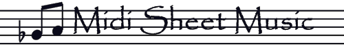

MidiSheetMusic is an app for learning to play your favorite MIDI songs.
It simultaneously:
- Plays MIDI music files
- Highlights the piano notes
- Highlights the sheet music notes
Playback options
A picture of the main playback screen is shown below:

The playback controls are at the top, with the piano and
sheet music underneath. The playback controls, from left
to right, are:
- Rewind Rewind the music by one measure
- Stop Stop the music, and return to the start of the song.
- Play Start playing the music.
- Fast Forward Fast forward the music by one measure.
- Speed Bar Change the speed of the music playback, from
1 to 100% of the original speed.
When the play button is pressed, and the music starts playing,
the playback controls are temporarily hidden, to give more
screen space to the piano and sheet music.
To pause the playback, simply tap anywhere on the screen.
The Android menu button has four options:
- Choose Song: Choose another song
- Settings: Adjust the sheet music settings
- Save As Images: Save the sheet music as PNG images (one per page).
The images are saved to the album Pictures/MidiSheetMusic.
- Help: Show this help screen
Sheet Music Settings
You can adjust the following Sheet Music Settings:
- Select Tracks To Display
MIDI files are divided into tracks, where each track generally
represents a separate musical instrument (piano, violin, etc).
The piano songs that come with MidiSheetMusic use two tracks:
one for the left hand and one for the right hand. For example,
if you enable only the right-hand track, then only the right-hand
notes are displayed and played.
- Select Tracks To Mute
You can mute individual tracks during playback. The tracks are still displayed.
- Select Instruments For Each Track
For each track, you can choose what instrument to use during playback.
- Scroll Vertically
Scroll the sheet music either vertically or horizontally during playback.
- Show the Piano
When checked, the piano notes will be highlighted during playback.
You can hide the piano to give more screen space to the sheet music.
- Show Lyrics
If the MIDI file contains lyrics, display them.
- Show Note Letters
When checked, display the note letters next to each note.
You can display either English letters (C, C#), Do-Re-Mi, or Numbers.
With Fixed Do-Re-Mi and Numbers, Do (number 1) is always the letter C.
With Movable Do-Re-Mi and numbers, Do (number 1) is the first letter of the key signature.
- Transpose Notes
Transpose the notes up or down. This changes both the sheet music
and the pitch of the notes during playback.
- Key Signature
MIDI files often do not include the key signature of the music.
In those cases, MidiSheetMusic must guess the key signature.
You can override the key signature used in the sheet music by
changing this option. This option does not affect the pitch of
the notes during playback.
- Time Signature
MIDI files often do not include a time signature. In those cases,
MidiSheetMusic will default to 4/4 time. You can override the
default time signature using this option.
- Combine Interval
MidiSheetMusic must determine whether a group of notes belong to
the same chord. Notes that are played at the exact same time
definitely belong to the same chord. However, notes that are
played just a couple milliseconds apart will sound as if they
are played at the same time. These notes should also be part
of the same chord. This option determines the interval (in
milliseconds) that notes will be considered part of the same
chord.
- Right Hand Color
Select the color used for highlighting the right hand notes.
- Left Hand Color
Select the color used for highlighting the left hand notes.
- Show Measure Numbers
Display the measure numbers in each staff.
- Play Measures in a Loop
Play a subset of measures continuously in a loop. This it useful for
learning small parts of a song at a time.
- Start/End Measure
Select the measure range to play in a loop.
What is a MIDI file?
A MIDI file is a type of music file. It is a standard format for
recording music from electronic instruments, such as electronic
keyboards/pianos.
MidiSheetMusic comes with over 50 sample classical piano songs.
You can also download additional MIDI files from the Internet,
and open them with MidiSheetMusic. When choosing a song, you
browse the filesystem for MIDI files.
About
MidiSheetMusic was developed by Madhav Vaidyanathan. The website is at:
http://midisheetmusic.sourceforge.net/
MidiSheetMusic is also available for Microsoft Windows
and Mac OS X, with additional features such as printing.